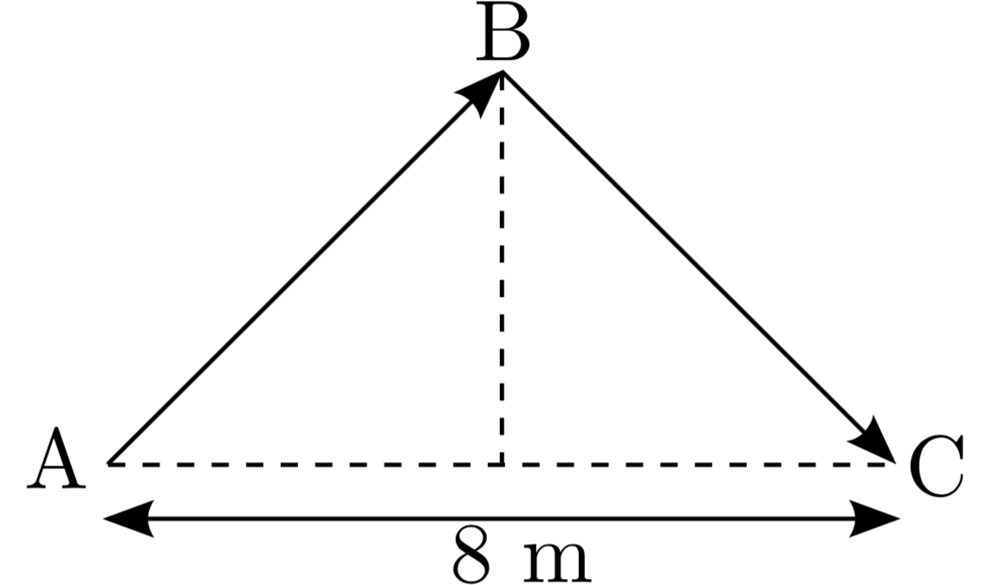

Forrige side🙂 🙁Eksempel 1PADLET
Ofte er dette eneste måte å løse problemet på, men i dette tilfellet her finnes det en annen som gir litt mer innsikt i problemstillingen. Prøv å tegne hele lysstrålen fra A til C i labsystemet. Sett mål på alle lengder på tegningen.
Ok, jeg har gjort det
Ble den slik? 
der høyden er 3m?
Jepp!
Streken fra A til B er jo avstanden som lyset har tilbakelagt fra A til B. Kan du bruke geometri på figuren til å finne
denne avstanden? Tilsvarende for A til C?
Ok, jeg har regnet
Ble det $\sqrt{(4\mathrm{m})^2+(3\mathrm{m})^2}=5m$ for både A til B og B til C? Dermed har lyset totalt tilbakelagt en avstand på $2\sqrt{(4\mathrm{m})^2+(3\mathrm{m})^2}=10m$ fra A til C?
Enig!
Men hvor lang tid bruker lys på å bevege seg en avstand 10m? (angi svaret i meter)
Ja, det må vel være...
...10 meter det? Et tidsintervall på 10 meter var jo definert som tiden lyset bruker på å tilbakelegge 10 m, det var slik vi regnet om tidsintervaller til meter. Men da har vi også funnet hvor lang tid det tar fra event A til event C i labsystemet, nøyaktig samme svar som vi fikk med å regne invarians av tidromsintervallet på forrige side. Alt er konsistent!